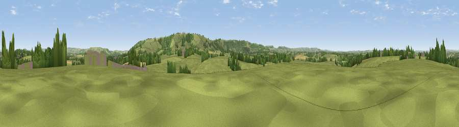

Viewpoint near Belchalwell
#23623 in England · top 45% of its area beats it · near BelchalwellWhere it is
The exact computed spot (ST 78575 10925). Click the marker for map links.
The view, rendered

A 360° render of this exact spot computed from the terrain model, tree cover and land cover — summer colours, afternoon light, calibrated against photographs of famous viewpoints. Real trees, hedges and buildings will differ in detail.
The panorama
Grey silhouette: terrain skyline in each direction (720 bearings, Earth curvature and refraction included). Dashed green: skyline with trees (+15 m) and buildings (+8 m) as obstacles. Blue strip: how far the ground is visible on each bearing.
Where the view opens
Wedge length = distance to the farthest visible ground on that bearing (vegetation-aware). Rings at 10, 25 and 50 km.
What fills the view
73% grassland · 15% woodland · 11% cropland · 1% built-up
Angular shares of the visible panorama (visual magnitude), not map area. Landscape diversity 0.35 (0–1 Shannon).
Key numbers
More beautiful places nearby
The staircase of upgrades: each row has a higher view potential than everything closer. Driving times are estimates from straight-line distance, calibrated against real road routing — check an actual route before setting out.
| Place | Direction | Drive | Score |
|---|---|---|---|
| Copse Hill | NNE · 2 km | ~5 min | 52.0 |
| Viewpoint near Belchalwell | SE · 3 km | ~6 min | 70.8 |
| Bell Hill | SSE · 3 km | ~7 min | 73.0 |
| Viewpoint near Woolland | SSW · 5 km | ~11 min | 74.5 |
| Viewpoint near Berwick St John | NE · 17 km | ~30 min | 78.2 |
| East Hill | SSW · 27 km | ~44 min | 79.6 |
| Viewpoint near Sutton Poyntz | SSW · 28 km | ~44 min | 79.9 |
| Viewpoint near Owermoigne | S · 29 km | ~45 min | 81.0 |
50.89740, -2.30602 · source: screening · position refined by local search. Computed location — check access rights before visiting.